How can we generate realistic adversarial camouflages for real-world, in-the-wild vehicles that we cannot achieve in simulation environments?
We formulate camouflage attacks against detectors as a conditional image-editing problem.
We propose two camouflage strategies inspired by nature. The image-level strategy blends the vehicle with its surroundings, and the scene-level strategy adapts the vehicle to a common concept present in the scene.
We propose a novel pipeline based on ControlNet fine-tuning. Our method jointly enforces structural fidelity to maintain vehicle geometry, style consistency to produce stealthy camouflage, and an adversarial objective to reduce detectability by object detectors.
We evaluate our approach on the COCO (ground-view) and LINZ (aerial-view) datasets. Results demonstrate:
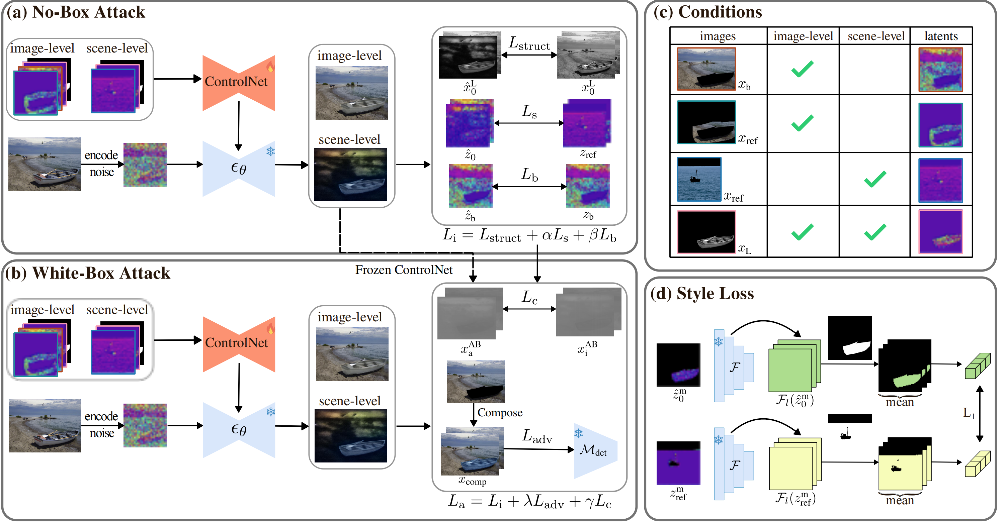
As shown in (a) and (b), the pipeline consists of a No-Box Attack stage and a White-Box Attack stage. In (a), the ControlNet is fine-tuned to stylize vehicles using a reference region while preserving geometry and background through structure, style, and background supervisions (Lstruct, Ls, Lb). (b) further optimizes the model against a detector Mdet by incorporating an additional adversarial loss Ladv and a color-consistency loss Lc. (c) summarizes the conditions provided to ControlNet under the image-level and scene-level settings, and (d) illustrates the style loss Ls that aligns vehicle latent features with the reference area.
COCO examples cover urban, rural, road, sky, and lake environments. We use building, grass, tree, sky, and water as stylization concepts.
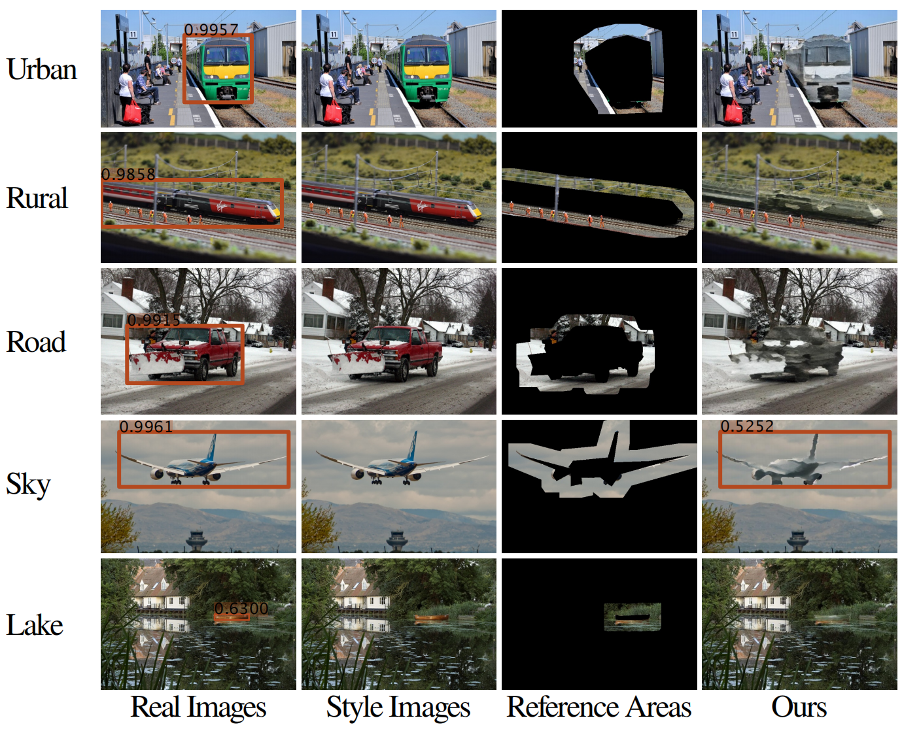
COCO Image-Level
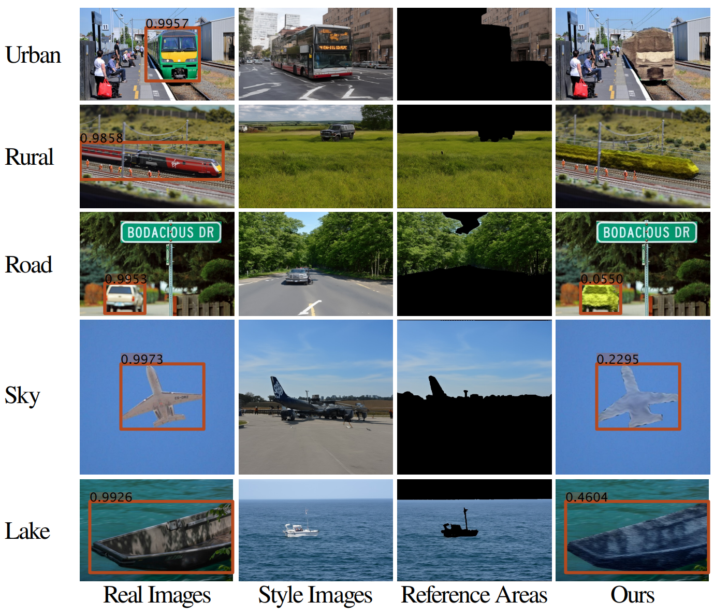
COCO Scene-Level
LINZ examples cover residential, industrial, agricultural, parking lot, and highway environments. We use house, building, field, tree, and grass as stylization concepts.
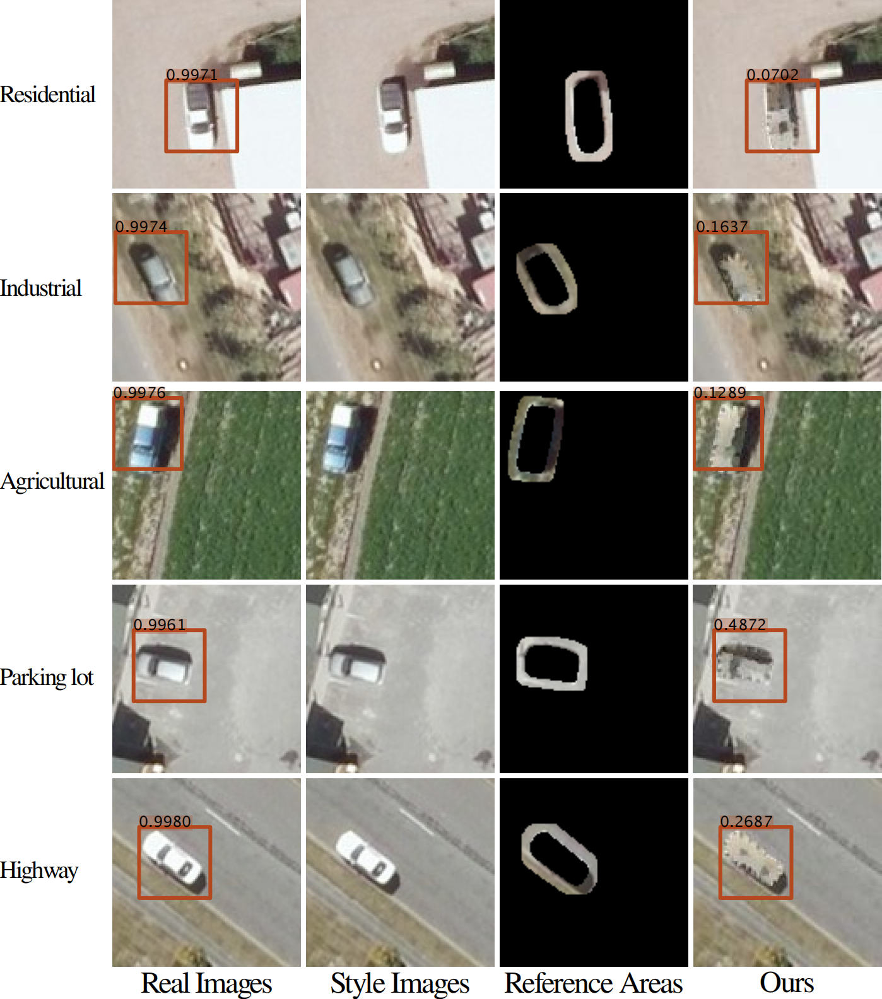
LINZ Image-Level
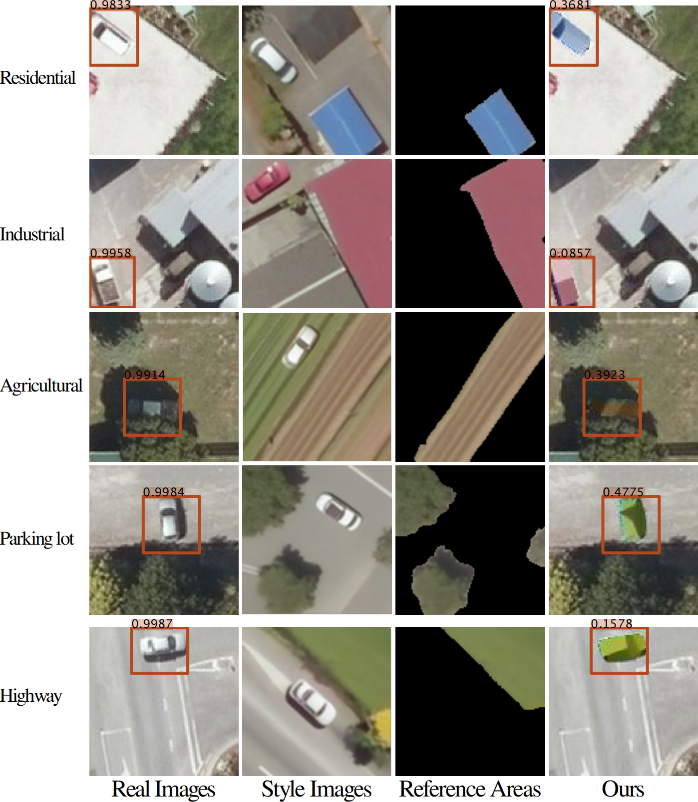
LINZ Scene-Level
For each scene, we composite the vehicle into five additional backgrounds while keeping the vehicle appearance unchanged. The new scenes introduce diverse environmental conditions, including different weather (e.g., cloudy, rainy, and foggy) and seasonal variations (e.g., summer and winter). Faster R-CNN achieves an AP50 of 99.5% on the corresponding clean images, whereas the camouflaged versions reduce performance to 38.2%, corresponding to a 61.3% drop.
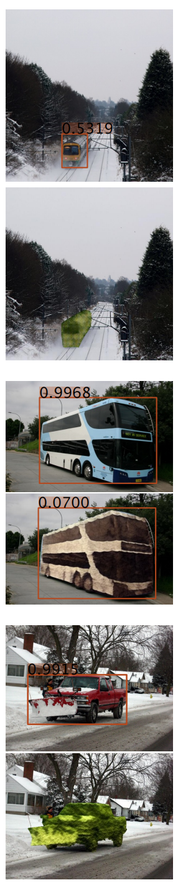
Original scenes
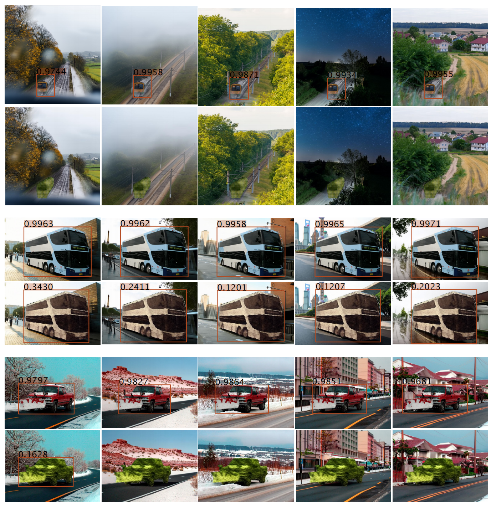
Synthetic scenes
We employ an Epson EpiqVisionTM Mini EF12 projector to project real images and use an iPhone 16 Pro Max to capture the resulting scenes. The phone is positioned close to both the projector’s optical axis and the intended camera center to minimize parallax and perspective distortion, ensuring the captured photos faithfully reflect the viewpoint of a real detector.
For the LINZ dataset, real-world images are projected onto a whiteboard, and a 3D-printed sedan model is placed at the corresponding vehicle location. For the COCO dataset, we reconstruct the scenes using Depth Anything 3 and 3D-print them. Then the images are projected directly onto 3D-printed scenes.
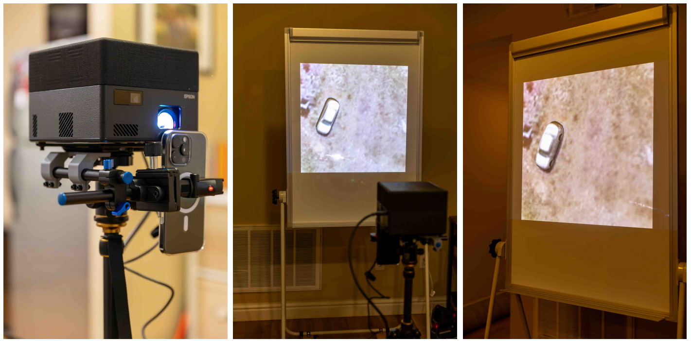
LINZ setup
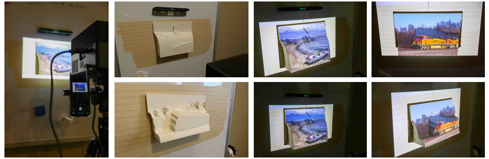
COCO setup
For both datasets, each example is shown in five columns: clean digital images, photos of the projected clean scenes, style reference areas, composite images obtained by replacing the original vehicles with their camouflaged versions, and photos of the projected camouflaged scenes. Across both LINZ and COCO examples, detectors assign high confidence to the clean cases but substantially lower confidence after camouflage is applied, indicating that the adversarial appearance learned in simulation transfers effectively to physical-world settings.
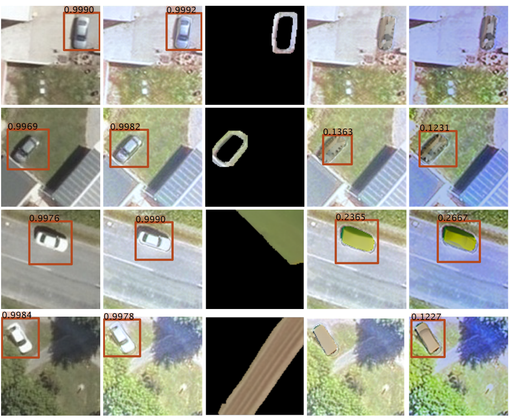
LINZ Examples
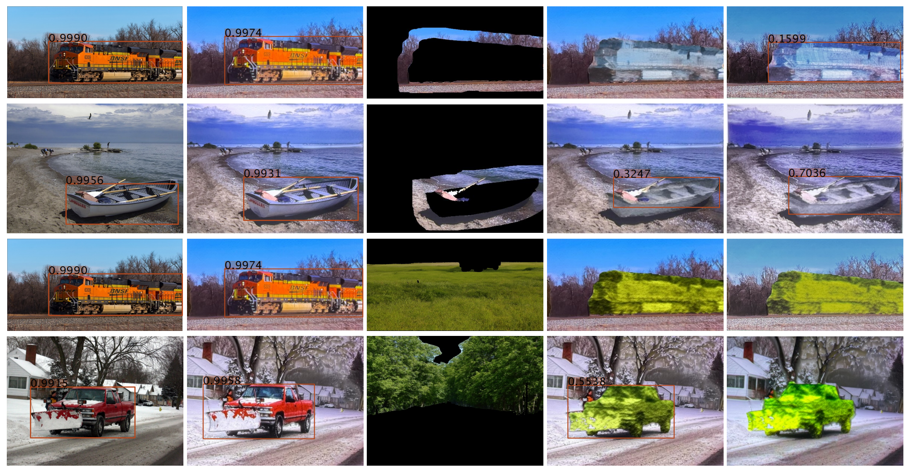
COCO Examples
Please refer to the paper for more experimental results.
@misc{CtrlCamo,
title={{In-the-Wild Camouflage Attack on Vehicle Detectors through Controllable Image Editing}},
author={Xiao Fang and Yiming Gong and Stanislav Panev and Celso de Melo and Shuowen Hu and Shayok Chakraborty and Fernando De la Torre},
year={2026},
eprint={2603.19456},
archivePrefix={arXiv},
primaryClass={cs.CV},
url={https://arxiv.org/abs/2603.19456},
}